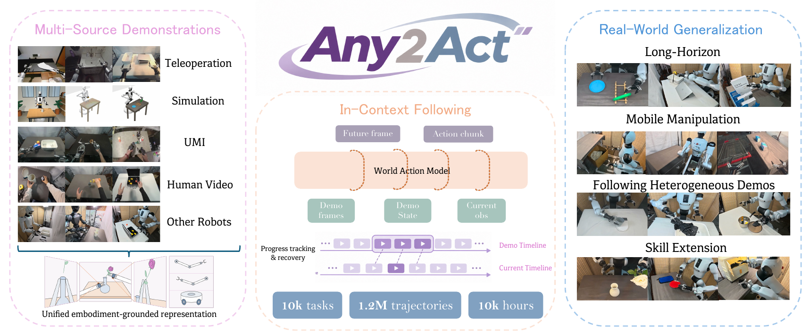
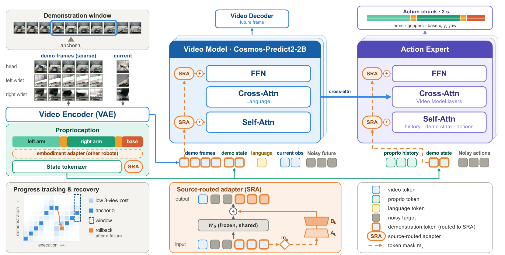

Astribot S1
Any2Act: Scaling In-Context Robot Learning
from Heterogeneous Demonstrations
Learn a new robot task from a single demonstration.
- 1.2M
- real robot trajectories
- 10K
- tasks in pretraining
- 57.5%
- success on unseen tasks in the real-world evaluation
Method
Any2Act expresses demonstrations in the camera views and action space of the robot that will execute them. It learns demonstration following from paired real-robot trajectories, then adapts to new sources with a few hundred task-aligned pairs per source.
During execution, a progress tracker keeps a short window of the demonstration in context. It can revisit an earlier step when the robot needs to retry.

Model architecture and progress tracking

Heterogeneous Demonstrations
Galbot rollouts at 5× speed. The Demo input inset shows a same-task demonstration aligned to the rollout by action phase.
Spirit Moz1
Brush a keyboard
Human (ego2sim)
Prepare eggs in a pot
UMI
Stow a tape measure and close a laptop
Simulation
Place a folded umbrella in a basket
Simulation
Place a paper ball in a container
Real-World Demonstrations
Ten complete Galbot tasks, shown from a fixed third-person camera at 5× speed.